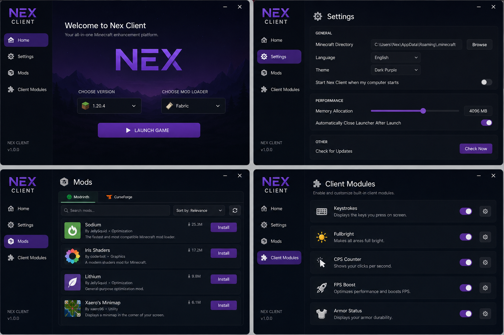

Multi-Version Launching
Launch supported Minecraft versions with generated JVM and game arguments, Java detection, and process console logs.
Minecraft launcher and client ecosystem
A modern, human-feeling launcher built for Microsoft auth, multi-version Minecraft, mod discovery, resource packs, client modules, and clear launch logs.

Built for everyday play
Launch supported Minecraft versions with generated JVM and game arguments, Java detection, and process console logs.
Browse Modrinth, CurseForge, and Planet Minecraft front pages without needing to search first.
Install compatible resource packs directly into Minecraft's resourcepacks folder from supported marketplaces.
Manage module config, apply Fullbright and FPS tuning, and prepare overlay settings for a future runtime mod.
Open source ready
NeX Client keeps local secrets out of Git with a private .env, includes
a safe .env.example, and stores launcher code in a simple Electron project
structure that contributors can understand quickly.
Install NeX Client
Download a guided Windows installer or a native Debian package for Linux.